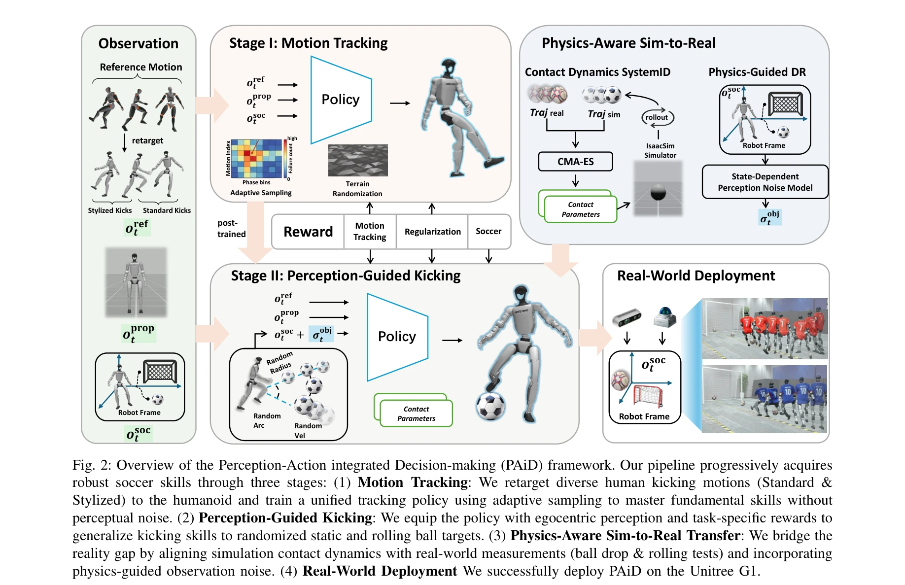
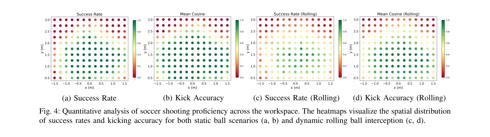

저자: Jipeng Kong, Xinzhe Liu, Yuhang Lin, Jinrui Han, Sören Schwertfeger, Chenjia Bai, Xuelong Li | 날짜: 2026-02-05 | DOI: 10.48550/arXiv.2602.05310

Fig. 2: Overview of the Perception-Action integrated Decision-making (PAiD) framework. Our pipeline progressively acquir
본 논문은 humanoid robot이 human-like kicking과 whole-body balance를 동시에 수행하는 soccer skill을 습득하기 위해, 세 단계로 구성된 Perception-Action integrated Decision-making (PAiD) 프레임워크를 제안한다.

Fig. 4: Quantitative analysis of soccer shooting proficiency across the workspace. The heatmaps visualize the spatial di
Fig. 2: Overview of the Perception-Action integrated Decision-making (PAiD) framework. Our pipeline progressively acquir
총평: 본 논문은 humanoid robot의 복잡한 embodied skill 습득을 위한 체계적인 progressive framework를 제시하며, motion tracking-perception integration-sim-to-real transfer의 세 단계 분해를 통해 기존 방식의 training instability와 reward conflict를 효과적으로 해결한다. 91.3% 성공률의 robust real-world kicking 성능과 diverse condition에서의 일관성은 제안 방법의 효과를 입증하며, divide-and-conquer 전략은 향후 complex embodied skill 습득의 scalable framework로 활용 가능하다.